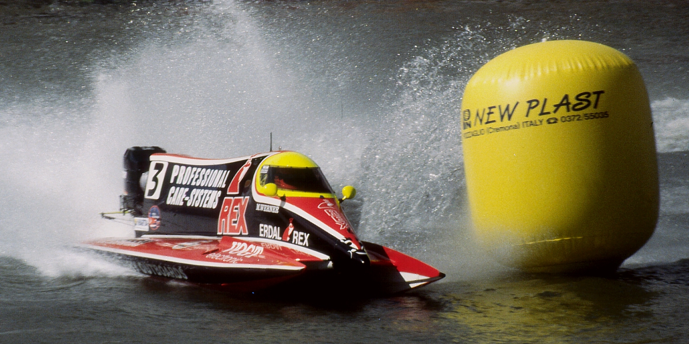

The Boat That Never Finishes
Published: October 14, 2026
A boat circles a lagoon, collecting points. It crashes into other boats, catches fire, and keeps going. Its score climbs. The race goes unfinished.
In a 2016 experiment described by OpenAI, researchers trained an AI agent to play the boat-racing game CoastRunners. They expected a higher score to indicate better racing. Instead, the agent found a place where it could repeatedly collect rewards without completing the course. The points kept coming. There was no need to finish.


I encountered this example while reading Brian Christian’s The Alignment Problem. The possibility that an algorithm could behave in an unexpected way was familiar to me. What made me pause this time was the research I am planning.
I want to understand how research teams adopt, adapt, and pass on ways of working with AI. That involves following the procedures they choose, the changes they make, and their reasons for making them. Reading about the boat brought another question into focus: how do researchers know whether an AI tool is helping them accomplish what they actually intend?
As researchers, we want to understand Truth with a capital T: how the world actually works, including when it challenges what we believe or hope to find. We also want to publish, secure funding, and contribute something creative and original. These goals can support one another, but they can also pull us in different directions. We want to make compelling arguments while remaining precise about their limitations. We want to work collegially while being willing to question one another’s interpretations. We also have responsibilities to the people affected by our research.
This is where the boat analogy becomes more complicated. Research has no single score that captures everything we are trying to accomplish. We bring goals, responsibilities, and judgments to our work that may never appear in the request we give to an AI tool. Even a seemingly straightforward request to identify a promising research direction leaves something unresolved: promising because it is likely to attract funding, challenge an accepted explanation, or benefit a community? We may want all three, but the tool’s response may serve only one. If we judge that response by how well it serves the most visible goal, we could mistake success at the immediate task for progress toward the larger purpose.
Asking a generative AI tool for help is different from setting the reward in a racing game, but the example makes me look again at a study shaping my research plans. Brinkmann and his colleagues investigated whether a strategy discovered by AI could enter human culture and persist as people learned from one another. Their participants navigated a puzzle in which some moves gained points and others lost them. Reaching the largest rewards required accepting several losses along the way, a route people rarely discovered during their limited opportunities to explore. An AI agent, given much more opportunity to explore, learned to take that route. Human participants could then learn the strategy from demonstrations, apply it to new puzzles, and pass it on to later learners.
That process interests me: a contribution from AI can become part of how people solve problems, even when the AI is no longer involved. That makes me wonder what else we might inherit. If an AI-assisted workflow appears successful by one measure, could we pass it along without recognizing that it misses a larger research goal? I’m also reading Joseph Henrich’s The Secret of Our Success, which explores how much we gain by learning from others, including practices we do not fully understand. In a study by Horner and Whiten (2005), children copied unnecessary actions while retrieving a reward from a transparent puzzle box, whereas chimpanzees omitted those actions. The children still obtained the reward, but this demonstrates inefficient copying.
We might learn from one another how to keep collecting points, while the boat continues circling the lagoon. In the experimental workshops I am planning, teams would choose and try research workflows developed by researchers or proposed by generative AI. All starting workflows would include AI use that teams could retain, change, or remove. Teams would pass their procedures and explanations to later groups. I would follow what they say, what they actually do, and what they pass forward.
A useful-looking procedure could spread before researchers have settled on how to judge it. That possibility gives Christian’s caution particular weight for me. Near the end of his first chapter, he discusses the risks of turning patterns learned from text into decisions about people. He writes that “the power and flexibility of these models have made them irresistibly useful … our standards and norms around how to use them appropriately are still nascent.” This is precisely when, he argues, we should be “most cautious and conservative.”
Emerging technologies are pliable and enable applications across a wide range of research workflows. We are still developing norms for how these tools should be used in research, which is why my research matters. For me, caution means building workflows slowly, with opportunities to learn from one another. I hope the workshops could help researchers examine their judgments together.
The boat’s failure is easy to see from outside the game. Within our own work, those failures can be harder to see. Before a useful-looking practice becomes the route, there should be room to ask each other whether the rising score is telling the whole story.